antes-atlas-desktop

Preto à frente (#000000) em superfícies e coluna lateral; cinza escuro ao fundo (#101312). Aplicativo autenticado local com contas descartáveis, antes/depois em1440×1000 e390×844, escala móvel do dispositivo. Atlas ilustrativo nos modos Web/Celular: modal antes/depois e conta depois. Antes do Atlas mostra sua prévia anterior, que apenas alterava o acento da navegação; agora a seleção Meia-noite representa também fundo/superfícies/coluna lateral. Nenhum novo modal, gravação remota ou dado real.
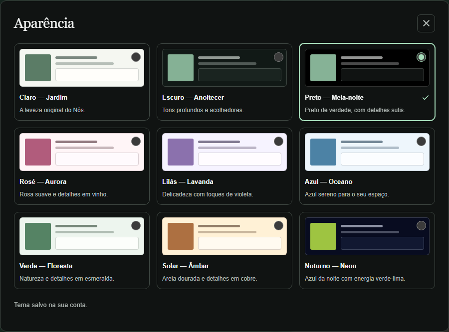
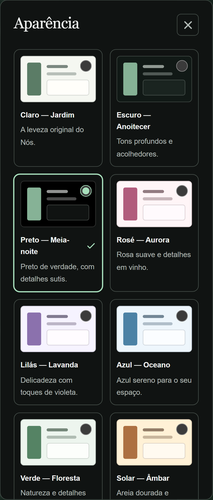
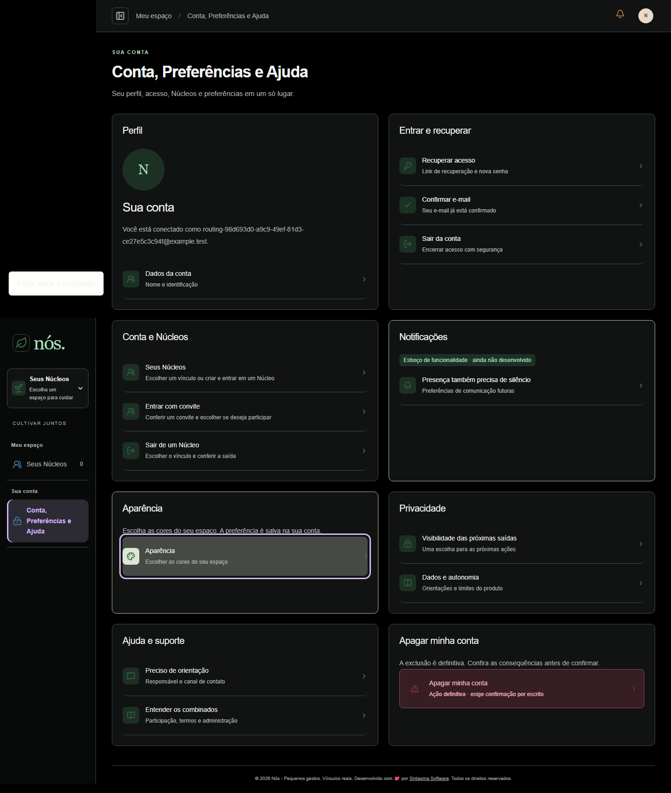
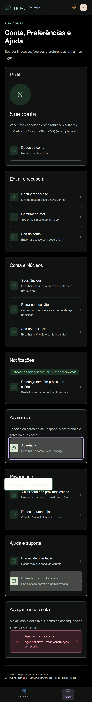

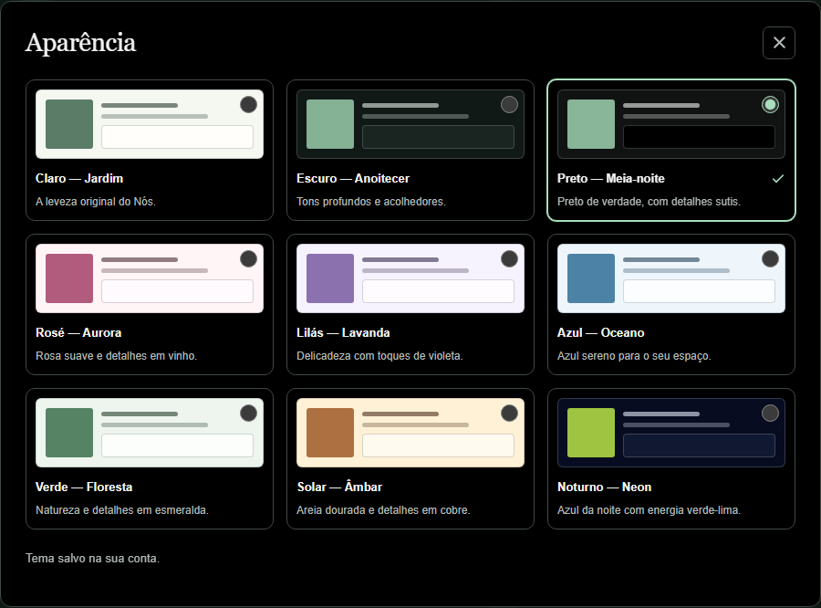
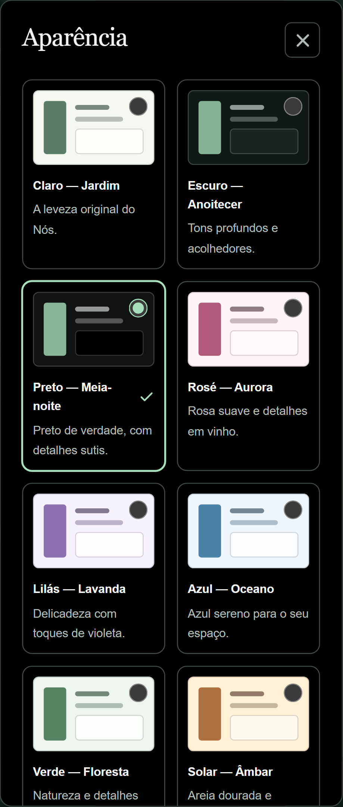
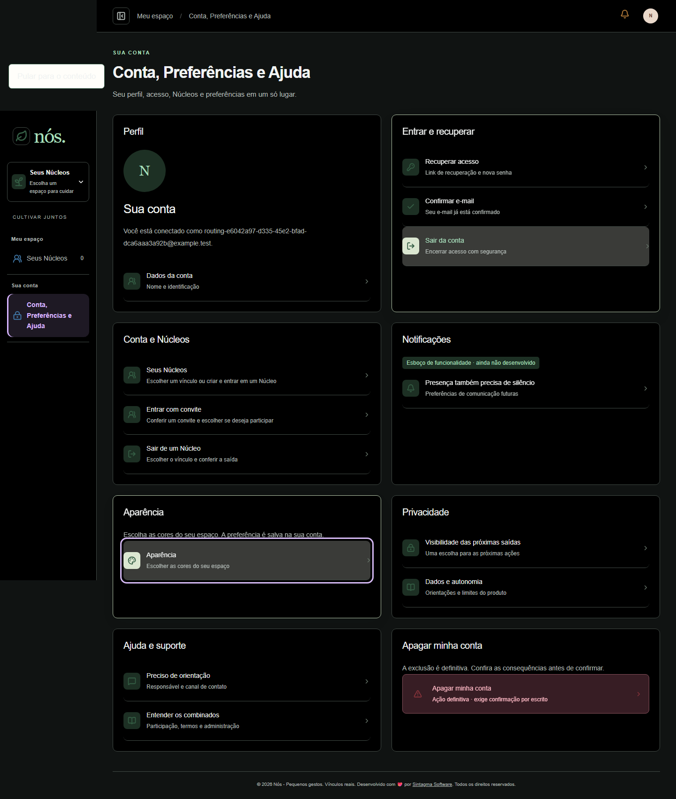
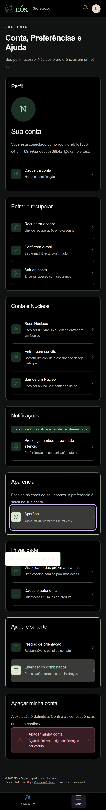
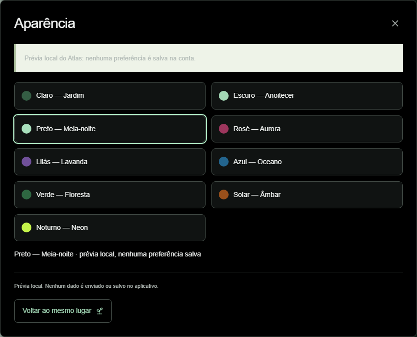
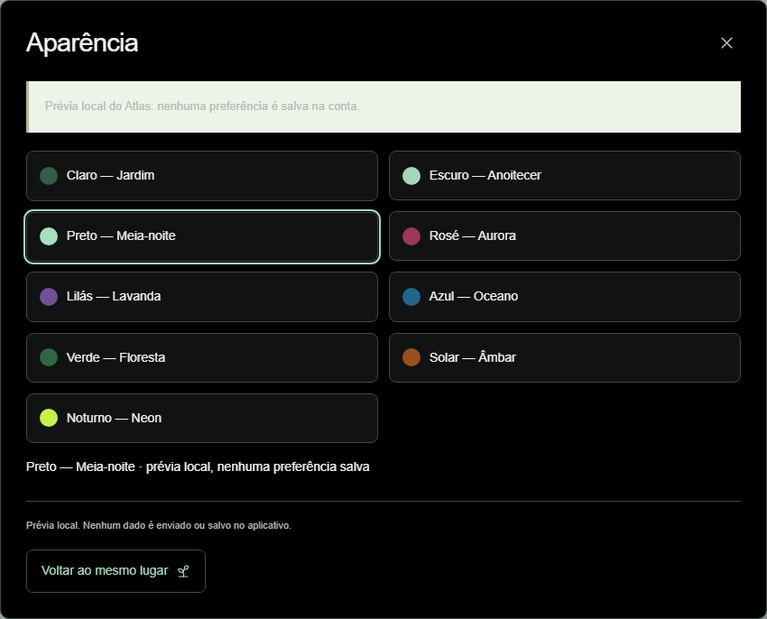
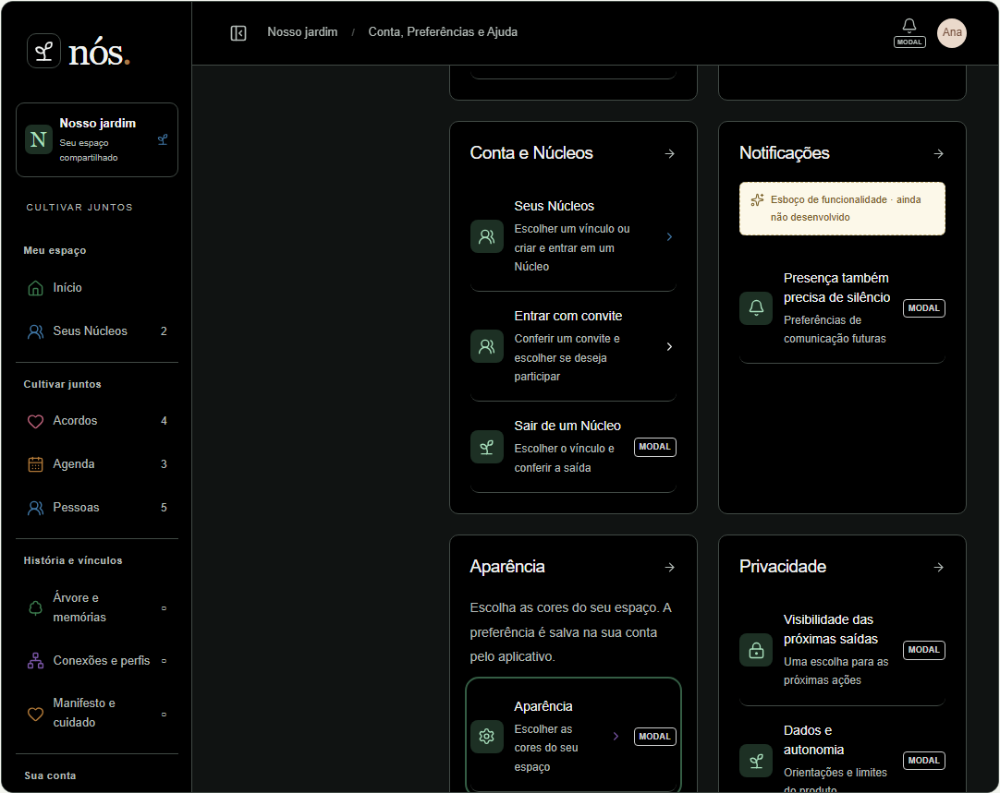
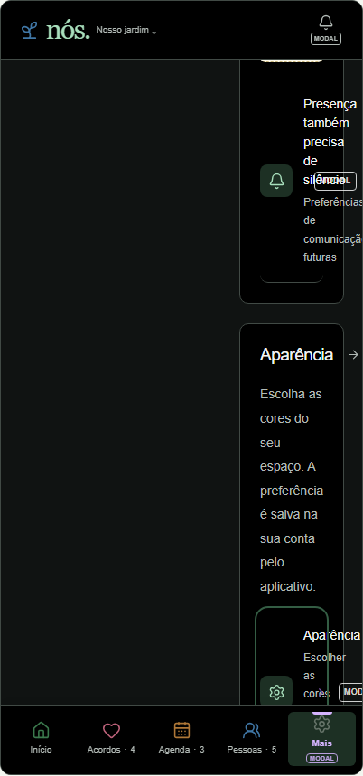
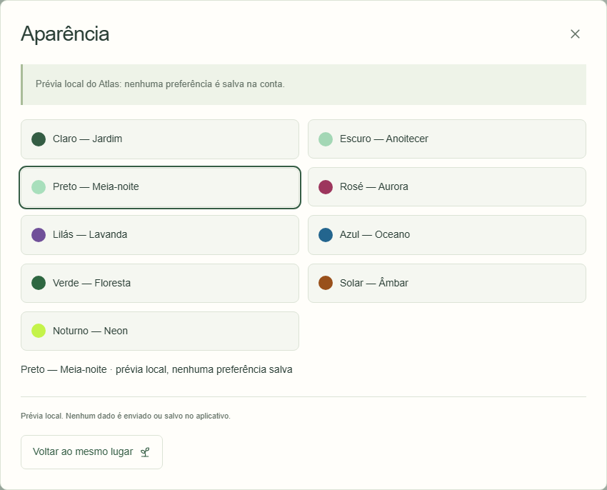
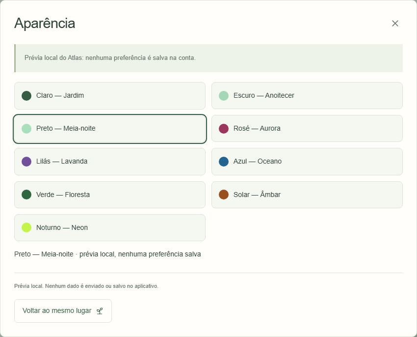